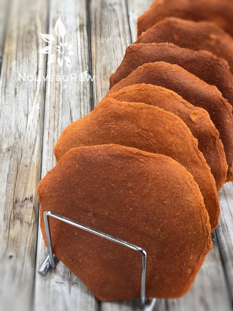

Red Pepper & Corn Tortilla Wraps

~ raw, vegan, gluten-free, nut-free ~
If you are looking for a sandwich wrap that can stand up to any ingredients that you throw at it…. a wrap that is flexible and sturdy… a wrap that is full of flavor… then you landed on the right recipe.
The one ingredient that gives this wrap the Olympic gymnastic flexibility is the psyllium powder, so I don’t recommend omitting it.
Raw wraps are wonderful staple foods because you can make a batch up and store them in an airtight container for 1-2 weeks. They are ready and waiting for your hunger pain to strike.
Stuff them full of your favorite ingredients. In this photo, I combined my Seafood Salad Spread, lettuce, tomatoes, onion, and ribboned avocados. I hope you make this recipe and find many wonderful combinations to load them up with. Please let me know down below in the comment section. Many blessings, amie sue
Ingredients:
yields 8 (3/4 cup) tortillas
- 4 cups (550 g) chopped yellow or red bell pepper
- 2 cups (290 g) peeled & chopped zucchini
- 3 cups (377 g) corn kernels
- 1 1/2 Tbsp nutritional yeast
- 1 Tbsp lemon juice
- 1/2 tsp Himalayan pink salt
- 1 (160 g) avocado, peeled, seeded, and mashed
- 3 Tbsp psyllium husks
Preparation:
- Place the bell pepper and zucchini in a high-speed blender, and process until smooth.
- Add the corn kernels, nutritional yeast, lemon juice, and salt, and process until smooth.
- Add the avocado and puree again.
- While the blender is still running, add the psyllium and blend well for a few seconds.
- Line the dehydrator tray with non-stick sheets.
- Using 1/2 to 3/4 cup of the mixture for each tortilla, use a small offset spatula to quickly form flat disks on the dehydrator tray lined with a nonstick sheet.
- Each disk should be about 6 inches in diameter, and they should not quite touch each other.
- Spread the tortillas into round disks quickly, or the mixture will thicken and become difficult to spread.
- Be sure to spread them evenly, so they dry evenly.
- Dehydrate at 145 degrees (F) for 1 hour, then reduce to 115 degrees (F) for 4 hours, or until you can easily remove them from the nonstick sheets.
- Turn the tortillas over onto mesh dehydrator screens. Place an additional mesh screen on top of each tray. This makes them flatter and easier to store.
- Continue dehydrating another 3 to 4 hours, until dry but still flexible.
- Store in an airtight container in the fridge for up to 2 weeks, or in the freezer for up to 2 months. Can be moistened with water to soften.
Culinary Explanations:
- Why do I start the dehydrator at 145 degrees (F)? Click (here) to learn the reason behind this.
- When working with fresh ingredients, it is important to taste test as you build a recipe. Learn why (here).
- Don’t own a dehydrator? Learn how to use your oven (here). I do however truly believe that it is a worthwhile investment. Click (here) to learn what I use.

© AmieSue.com